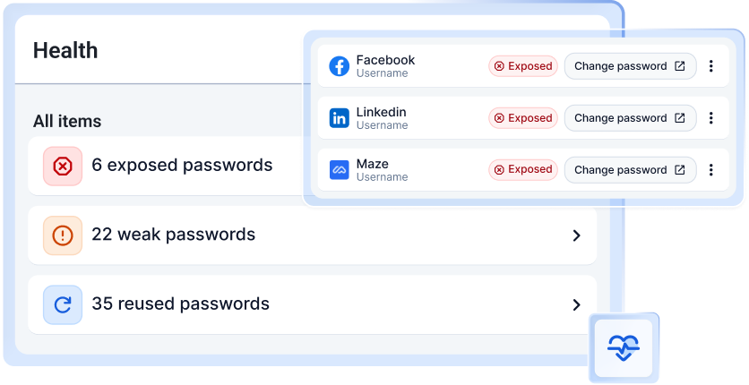

{{ "scanningYourVault" | i18n }}
{{ "scanningYourVaultDesc" | i18n }}
{{ (ctx.atRisk === 0 ? "yourVaultIsHealthy" : "yourVaultIsAtRisk") | i18n }}
{{ "passwordsAreSecure" | i18n: ctx.total : ctx.total }} {{ "passwordsNeedFixing" | i18n: ctx.atRisk : ctx.total }}
{{ "exposedPasswords" | i18n }}
{{ "exposedPasswordsDesc" | i18n }}
{{ "weakPasswords" | i18n }}
{{ "weakPasswordsDesc" | i18n }}
{{ "reusedPasswords" | i18n }}
{{ "reusedPasswordsDesc" | i18n }}
{{ "uncoverPasswordsDesc" | i18n }}

{{ "healthIntroDesc" | i18n }}